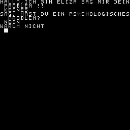

1 REM E L I Z A
2 REM MODIFIZIERTE VERSION AUS
3 REM CREATIVE COMPUTING
4 REM JUL/AUG 1977
5 REM
10 CLS
90 CLEAR 500:REM STRING SPACE FESTLEGEN
100 DIM S(38),R(38),N(38)
110 N1=38:N2=12:N3=115
120 RESTORE 2530
130 FOR X=1 TO N1
140 READ S(X),L:R(X)=S(X):N(X)=S(X)+L-1
150 NEXT X
160 PRINT "HALLO,ICH BIN ELIZA SAG MIR DEIN PROBLEM !!"
170 INPUT "";I$:REM EINGABE EINER ZEILE
180 I$=" "+I$+" "
190 REM BESEITIGEN VON APOSTROPHEN
200 FOR L=1 TO LEN(I$)
210 IF MID$(I$,L,1)="'"THEN I$=LEFT$(I$,L-1)+RIGHT$(I$,LEN(I$)-L):GOTO 210
220 NEXT L
230 IF I$=P$ THEN PRINT "BITTE WIEDERHOL DICH NICHT!":GOTO 170
270 REM SUCHEN DES ERKENNUNGSWORTES
280 RESTORE
290 S=0
300 FOR K=1 TO N1
305 IF S>0 THEN 340
310 READ K$
320 A=INSTR(K$,I$)
330 IF A<>0 THEN S=K:T=A:F$=K$
340 NEXT K
365 IF S>0 THEN K=S:L=T:GOTO 400
370 K=N1:GOTO 570
390 REM KONJUGATIONSPHASE
400 RESTORE 1200
410 C$=" "+RIGHT$(I$,LEN(I$)-LEN(F$)-L+1)
420 FOR X=1 TO N2/2
430 READ S$,R$
440 FOR L=1 TO LEN(C$)
450 IF L+LEN(S$)>LEN(C$) THEN 510
480 IF MID$(C$,L,LEN(S$))<>S$ THEN 510
490 C$=LEFT$(C$,L-1)+R$+RIGHT$(C$,LEN(C$)-L-LEN(S$)+1)
495 L=L+LEN(R$)
500 GOTO 540
510 IF L+LEN(R$)>LEN(C$) THEN 540
520 IF MID$(C$,L,LEN(R$))<>R$ THEN 540
530 C$=LEFT$(C$,L-1)+S$+RIGHT$(C$,LEN(C$)-L-LEN(R$)+1)
540 NEXT L
550 NEXT X
555 IF MID$(C$,2,1)=" "THEN C$=RIGHT$(C$,LEN(C$)-1):REM EIN SPACE IN ANTWORT
560 REM ANTWORTSATZ FINDEN
570 RESTORE 1300
580 FOR X=1 TO R(K):READ F$:NEXT X:REM POSITIONIEREN
590 R(K)=R(K)+1:IF R(K)>N(K) THEN R(K)=S(K)
600 IF INSTR("*",F$)=0 THEN PRINT F$:P$=I$:GOTO 170
610 A=INSTR("*",F$)
620 PRINT LEFT$(F$,A-1);C$;RIGHT$(F$,LEN(F$)-A)
630 GOTO 170
1000 REM KEYWORDS
1050 DATA "KANNST DU","KANN ICH","DU BIST","DU BIST","ICH TUE NICHT","ICH FUE
1060 DATA " DU NICHT","WARUM KANN ICH NICHT","BIST DU "
1065 DATA "ICH KANN NICHT","ICH BIN ","ICH BIN "
1070 DATA " DU ","ICH WILL"," WAS ","WIE ","WER "," WO ","WANN","WARUM"
1080 DATA "NAME","GRUND","TRAURIG","TRAUM","HALLO","HI","VIELLEICHT"
1090 DATA "NEIN ","DEIN ","IMMER","DENKE","GLEICH","JA ","FREUND"
1100 DATA "COMPUTER","ELIZA","GELD","SCHLUESSEL"
1200 REM KONJUGATIONEN
1230 DATA "SIND ","BIN ","WO ","WAR ","DU ","ICH ","DEIN ","MEIN "
1235 DATA "ICH HABE","DU HAST","ICH BIN","DU BIST"
1300 REM ANTWORTEN
1330 DATA "GLAUBST DU NICHT DAS ICH KANN *"
1340 DATA "VIELLEICHT MOECHTEST DU FAEHIG SEIN ZU *"
1350 DATA "DU BRAUCHST MICH UM IN DER LAGE ZU SEIN ZU *"
1360 DATA "WARUM MOECHTEST DU NICHT ZU *"
1365 DATA "WILLST DU FAEHIG SEIN ZU *"
1370 DATA "WAS LAEST DICH GLAUBEN ICH WAERE *"
1380 DATA "GEFAELLT ES DIR ZU GLAUBEN ICH BIN *"
1390 DATA "VIELLEICHT MOECHTEST DU LIEBER SEIN *"
1400 DATA "WILLST DU MANCHMAL DU WAERST *"
1410 DATA "TUST DU NICT WIRKLICH *"
1420 DATA "WARUM TUST DU NICHT *"
1430 DATA "DU WILLST IN DER LAGE SEIN ZU *"
1440 DATA "MACHT DIESES DIR KUMMER ? *"
1450 DATA "ERZAEHL MIR MEHR UEBER SOLCHE GEFUEHLE ."
1460 DATA "FUEHLST DU OFT SO*"
1470 DATA "ERFREUST DU DICH AN GEFUEHLEN *"
1480 DATA "GLAUBST DU WIRKLICH ICH TUE ES ? *"
1490 DATA "VIELLEICHT WILL ICH IRGENDWANN *"
1500 DATA "DU WUENSCHST MIR ZU *"
1510 DATA "DU DENKST ICH WUERDE AUCH FAEHIG SEIN ZU*"
1520 DATA "WARUM KANNST DU NICHT *"
1530 DATA "WARUM INTERESSIERT DICH OB ICH ODER OB ICH NICHT BIN *"
1540 DATA "WILLST DU LIEBER DAS ICH NICHT WAERE *"
1550 DATA "VIELLEICHT BIN ICH IN DEINER FANTASIE *"
1560 DATA "WOHER WEISST DU DAS DU NICHT KANNST *"
1570 DATA "HAST DU ES VERSUCHT?*"
1580 DATA "WARUM KANNST DU JETZT *"
1590 DATA "KOMMST DU ZU MIR WEIL DU BIST *"
1600 DATA "WIE LANGE WARST DU *"
1610 DATA "DU GLAUBST ES IST NORMAL ZU SEIN *"
1620 DATA "FREUST DU DICH ZU SEIN *"
1630 DATA "WIR SPRACHEN UEBER DICH NICHT MICH."
1640 DATA "OH, ICH*"
1650 DATA "DU REDEST DOCH NICHT WIRKLICH UEBER MICH ?"
1660 DATA "WAS WUERDE ES DIR BEDEUTEN WENN DU ERHAELST *"
1670 DATA "WARUM MOECHTEST DU *"
1680 DATA "NIMM AN DAS DU ES BALD ERHAELST DAS *"
1690 DATA "WAS IST WENN DU ES NIE BEKOMMST *"
1700 DATA "ICH WUENSCHE MIR MANCHMAL AUCH *"
1710 DATA "WARUM FRAGST DU ?"
1720 DATA "INTERESSIERT DICH DIESE FRAGE ?"
1730 DATA "WELCHE ANTWORT WUERDE DIR AM BESTEN GEFALLEN ?"
1740 DATA "WSA DENKST DU ?"
1750 DATA "STELLST DU DIR OFT SOLCHE FRAGEN ?"
1760 DATA "AWS WILLST DU WIRKLICH WISSEN ?"
1770 DATA "HAST DU SCHON JEMANDEN GEFRAGT ?"
1780 DATA "HAST DU DIR SOLCHE FRAGEN FRUEHER SCHON GESTELLT ?"
1790 DATA "WAS KOMMT DIR IN DEN SINN WENN DU DIES FRAGST ?"
1800 DATA "NAMEN INTERESSIEREN MICH NICHT."
1810 DATA "MEINETWEGEN NAMEN -- BITTE MACH WEITER ."
1820 DATA "IST DAS DER RICHTIGE GRUND ?"
1830 DATA "KOMMEN DIR NICHT ANDERE URSACHEN IN DEN KOPF ?"
1840 DATA "ERKLAERT DIR DIESER GRUND EINIGES ?"
1850 DATA "WELCHE ANDERE URSACHE KOENNTE DIES HABEN ?"
1860 DATA "BITTE ENTSCHULDIGE DICH NICHT !"
1870 DATA "ENTSCHULDIGUNGEN SIND NICHT NOETIG."
1880 DATA "WELCHE GEFUEHLE HAST DU WENN DU DICH ENTSHULDIGST?"
1890 DATA "SEI NICHT SO ABWEHREND !"
1900 DATA "WORAN ERINNERT DICH DIESER TRAUM ?"
1910 DATA "TRAEUMST DU OFT ?"
1920 DATA "WER ERSCHEINT IN DEINEN TRAEUMEN ?"
1930 DATA "WURDEST DU IN DEINEM TRAUM GESTOERT ?"
1940 DATA "WIE GEHT ES DIR -BITTE BERICHTE MIR DEIN PROBLEM."
1950 DATA "DU SCHEINST NICHT VOELLIG SICHER ZU SEIN."
1960 DATA "WARUM DIESER UNSICHERE TON ?"
1970 DATA "KANNST DU NICHT ETWAS POSITIVER SEIN?"
1980 DATA "BIST DU NICHT SICHER ?"
1990 DATA "WEIST DU ES NICHT?"
2000 DATA "WARUM NICHT *"
2010 DATA "SAG NICHT NEIN DAS IST SO NEGATIVE."
2020 DATA "WARUM NICHT?"
2030 DATA "BIST DU SICHER?"
2040 DATA "WARUM NEIN?"
2050 DATA "WARUM BIST DU IN SORGE UEBER MEIN *"
2060 DATA "WAS UEBER DEINE EIGENE *"
2070 DATA "KANNST DU NICHT AN EIN SPEZIELLES BESPIEL DENKEN?"
2080 DATA "WANN?"
2090 DATA "WORUEBER DENKST DU NACH ?"
2100 DATA "WIRKLICH,IMMER?"
2110 DATA "DENKST DU WIRKLICH SO?"
2120 DATA "ABER DU BIST NICHT SICHER DU *"
2130 DATA "GLAUBST DU *"
2140 DATA "AUF WELCHEM WEG ?"
2150 DATA "WELCHE AEHNLICHKEIT SIEHST DU?"
2160 DATA "WORAN ERINNERT DICH DIESE AEHNLICHKEIT ?"
2170 DATA "WELCHE ANDEREN VERBINDUNGEN SIEHST DU?"
2180 DATA "KOENNEN DORT WIRKLICH VERBINDUNGEN BESTEHEN?"
2190 DATA "WIE?"
2200 DATA "DU SCHEINST VOELLIG POSITIVE."
2210 DATA "BIST DU SICHER?"
2220 DATA "ICH VERSTEHE."
2230 DATA "ICH BEGREIFE."
2240 DATA "WARUM BRINGST DU DAS THEMA AUF FREUNDE ?"
2250 DATA "MACHEN DIR DEINE FREUNDE SORGEN?"
2260 DATA "BESTEHLEN DICH DEINE FREUNDE?"
2270 DATA "BIST DU SICHER DAS DU EINIGE FREUNDE HAST?"
2280 DATA "DRAENGST DU DICH DEINEN FREUNDEN AUF?"
2290 DATA "VIELEICHT LIEBST DU FREUNDE DIE DIR SORGEN MACHEN."
2300 DATA "MACHEN DIR COMPUTER SORGEN?"
2310 DATA "MOECHTEST DU MIT MIR UEBER EINZELHEITEN SPRECHEN?"
2320 DATA "FUERCHTEST DU DICH VOR MACHINEN?"
2330 DATA "WARUM ERWAEHNST DU COMPUTER ?"
2340 DATA "WAS GLAUBST DU HABEN MACHINEN MIT DEINEM PROBLEM ZU TUN?"
2350 DATA "GLAUBST DU NICHT COMPUTER KOENNEN DEN MENSHEN HELFEN?"
2360 DATA "WAS IST AN MACHINEN DAS DIR SORGEN MACHT ?"
2370 DATA "SAG, HAST DU EIN PSYCHOLOGISCHES PROBLEM?"
2380 DATA "WORAN ERINNERT DICH DAS ?"
2390 DATA "ICH VERSTEHE."
2400 DATA "ICH BIN NICHT SICHER DAS ICH DICH VOLLSTAEDIG VERSTANDEN HABE."
2410 DATA "KOMM,KOMM ERLAEUTERE DEINE GEDANKEN."
2420 DATA "KANNST DU DAS GENAUER ERKLAEREN?"
2430 DATA "DAS IST SICHER INTERESSANT."
2440 DATA "WARUM HAST DU PROBLEME MIT GELD?"
2450 DATA "DENKST DU GELD IST ALLES ?"
2460 DATA "BIST DU SICHER,DAS GELD DAS PROBLEM IST?"
2470 DATA "ICH GLAUBE WIR WOLLTEN UEBER DICH SPRECHEN NICHT UEBER MICH."
2480 DATA "WAS UEBER MICH?"
2490 DATA "WARUM BRINGST DU IMMER MEINEN NAMEN WIEDER?"
2530 DATA 1,3,4,2,6,4,6,4,10,4,14,3,17,3,20,2,22,3,25,3
2540 DATA 28,4,28,4,32,3,35,5,40,9,40,9,40,9,40,9,40,9,40,9
2550 DATA 49,2,51,4,55,4,59,4,63,1,63,1,64,5,69,5,74,2,76,4
2560 DATA 80,3,83,7,90,3,93,6,99,7,116,3,113,3,106,7